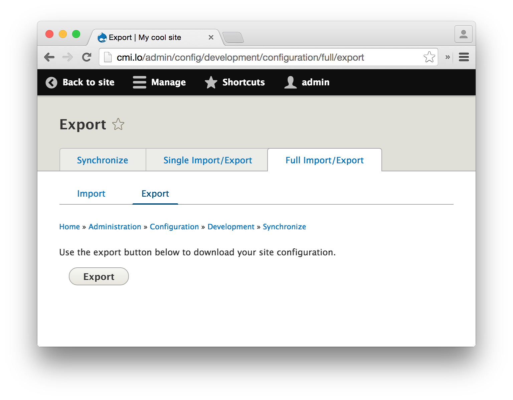

Управление конфигурациями в Drupal 8, обзор для разработчиков
Drupal 8 приносит с собой множество улучшений и моё любимое — управление конфигурациями. Я попытаюсь сделать быстрый обзор на эту тему.
Пожалуйста помните, что этот обзор был написан во время релиза Drupal 8 beta 3. Кое-что могло измениться.
Типы информации в Drupal 8
Согласно официальной документации, мы располагаем четырьмя типами информации:
Хорошая новость состоит в том, что почти всё кроме контента — это конфигурации: настройки модулей, их состояния, блоки, расположение блоков, типы контента, поля, режимы отображения, и так далее. Вся эта информация обрабатывается во время импорта конфигураций. Это делает процесс деплоя очень простым.
Где хранятся конфигурации
Давайте посмотрим в файл settings.php на свежеустановленном Drupal 8.
$config_directories['active'] = 'sites/default/files/config_XXXX/active';
$config_directories['staging'] = 'sites/default/files/config_XXXX/staging';
Здесь, XXXX — это длинный хеш, сгенерированный с целью защиты вашей конфигурации от доступа из веба.
В директории active подразумевается хранение вашей текущей конфигурации. Я сказал «подразумевается» потому что по умолчанию эта директория пуста, а текущая конфигурация хранится в базе данных. Это сделано по соображениям безопасности и производительности. Однако вы можете изменить это поведение с помощью модуля Configuration Tools (config_tools). (Разве вы не помните что для всего есть свой модуль? ;))
Директория staging — это место, откуда конфигурация импортируется/синхронизируется. Эта директория тоже пуста ели вы не пользуетесь возможностью импорта/экспорта конфигураций.
Совет: Git
Директория sites/default/files чаще всего внесена в файл .gitignore и игнорируется Git'ом, но вы скорее всего захотите чтобы ваши конфигурационные файлы находились под управлением системы контроля версий. Рекомендованный способ размещения директории конфигураций — вне директории где установлен Drupal, так что она недоступна для веба. А самый простой способ — переместить директорию конфигураций в директорию sites/default (но оставьте хеш в её имени для безопасности).
Встроенный пользовательский интерфейс
Из коробки, вместе с Drupal устанавливается (в стандартном профиле) модуль Configuration Manager (config) который предоставляет базовый UI для управления конфигурациями. Его можно найти по пути admin/config/development/configuration. Вкладка “Full Import/Export” представляет здесь наибольший интерес. Полная конфигурация сайта может быть экспортирована как .tar.gz архив на под-вкладке Export. Затем вы сможете использовать такой архив для импорта конфигурация на другом экземпляре сайта.

При использовании этого интерфейса, импортируемый файл конфигураций не используется сразу после загрузки, а распаковывается в директорию staging. После чего необходимо запустить синхронизацию на вкладке Synchronize, где вы также можете просмотреть внесенные изменения.
Вот и всё! Деплоймент теперь доступен из коробки. Больше не нужно никаких дополнительных инструментов!
Если вы не хотите использовать UI, то Drush как всегда к вашим услугам.
drush config-export # экспортирует текущую конфигурацию в директорию staging
drush config-import # импортирует конфигурацию из директории staging
Единица измерения конфигураций
Давайте рассмотрим пример экспортированной конфигурации.
# file: system.site.yml
uuid: c78fd9aa-b327-4514-9d00-bc72a1f40f27
name: 'My cool site'
mail: mailbox@example.com
slogan: 'Drupal 8 rules!'
page:
403: ''
404: ''
front: node
admin_compact_mode: false
weight_select_max: 100
langcode: en
Здесь, название конфигурации — system.site. Это и есть единица измерения конфигурации. Все названия конфигураций должны иметь в начале название модуля или темы, в данном случае — system.
Содержимое файла по структуре очень напоминает обычный PHP массив. И когда вы будете работать с конфигурациями из кода, вы действительно будете использовать массивы.
Совет: лучшие практики
Если у вашего модуля/темы не очень много настроек, рекомендуется хранить их в одной конфигурации с названием your_module_name.settings.
Работа с конфигурациями из модуля или темы
Drupal 8 предоставляет очень хороший API для работы с конфигурациями. Взгляните на код.
$config = \Drupal::config('system.site');
// Instance of Drupal\Core\Config\Config
$front_page = $config->get('page.front');
// 'node'
$page_settings = $config->get('page');
// array(
// '403' => '',
// '404' => '',
// 'front' => 'node',
// )
$config->set('page.front', 'my-front-page');
$config->save();
Очень просто, не так ли? Вы можете найти большинство методов для работы с конфигурациями в классе Drupal\Core\Config\Config. Так же, другие примеры доступны в разделе Simple Configuration API документации разработчика.
Значения по умолчанию
Помните как мы указывали значения переменных по умолчанию в Drupal 7?
$value = variable_get('my_variable_name', 'my_default_value');
В Drupal 8 значения по умолчанию больше не будут разбросаны по коду. Если у вас есть настройка, установите её значение по умолчанию во время установки модуля. Есть два способа сделать это:
Вы можете найти примеры в модуле Comment: в файле contact.form.feedback.yml, значение recipients устанавливается в пустой массив. Затем, в contact_install(), устанавливается фактическое значение.
Экспорт конфигурации в модуль
Есть один интересный момент по поводу директории config/install.
В Drupal 7 мы можем экспортировать различный функционал в код наших модулей. Распространённый пример: view для административного интерфейса модуля. Чтобы сделать это, нам понадобится базовое знание Views API, некоторые хуки, и немного копипастинга. Модуль Features так же может нам с этим всем помочь.
С Drupal 8 всё становится намного проще. Пример для view:
Вуаля! Ваш view будет импортирован автоматически при установке модуля.
Подмена (override) конфигураций
Одна из лучших особенностей друпала- это то, что мы можем изменить (подменить) всё не трогая при этом ядро и сторонние модули. Конфигурации здесь не исключение.
Существует два вида подмены конфигураций.
Подмена из settings.php (settings override)
Файл settings.php может подменять конфигурации на уровне окружения. Просто вспомните как мы запрещали отправку писем с серверов разработки в Drupal 7:
$conf['mail_system']['default-system'] = 'DevelMailLog';
Почти так же это будет выглядеть в Drupal 8:
$config['system.mail']['interface']['default'] = 'devel_mail_log';
Подмена из модуля (module override)
Мы можем динамически подменять конфигурации из модулей. Для этого используются сервисы имеющие тег config.factory.override и имплементирующие класс ConfigFactoryOverrideInterface. Вы можете найти пример в модуле Language, который переводит некоторые строки хранящиеся в конфигурациях (таким образом, когда вы вызываете Drupal::config(...)->get(...), вы на самом деле получаете переведённую строку вместо оригинальной).
Получение исходных (not overridden) конфигураций
Иногда нам нужны исходные конфигурации. В основном это нужно для конфигурационных форм (например, чтобы пользователь мог изменить исходные строки, а не их переводы). Для этого случая в ядре Drupal предусмотрен класс ConfigFormBase, который следует использовать вместо стандартного FormBase. В нём есть метод ConfigFormBase::config(), который возвращает исходные конфигурации и который, опять же, следует использовать вместо привычного Drupal::config().
Другой способ — метод Config::getRawData(). А для более сложных случаев, посмотрите на реализацию метода ConfigFormBaseTrait::config().
Совет: лучшие практики
Когда вы работаете из класса расширяющего какой-либо базовый класс, изучите все имеющиеся в вашем распоряжении методы (доступные из родительских классов) и используйте их вместо глобально доступных методов. Пример выше демонстрирует как получить исходные конфигурации с помощью метода ::config() когда вы работаете из дочернего класса ConfigFormBase. Ещё один пример: многие классы имеют встроенный метод ::t(), который должен быть использован вместо глобальной функции t(). Для этого всегда есть причины, взгляните на пример.
Реагируем на изменения конфигураций
Есть два способа:
Configuration schema/metadata
Вы можете описать вашу конфигурацию с помощью схем — configuration schemas, тем самым сделав её понятной для Drupal'а. Давайте начнём с примера.
# file: core/modules/system/config/install/system.maintenance.yml
message: '!site is currently under maintenance. We should be back shortly. Thank you for your patience.'
langcode: en
# file: core/modules/system/config/schema/system.schema.yml
system.maintenance:
type: mapping
label: 'Maintenance mode'
mapping:
message:
type: text
label: 'Message to display when in maintenance mode'
langcode:
type: string
label: 'Default language'
# file: core/config/schema/core.data_types.schema.yml
text:
type: string
label: 'Text'
translatable: true
# ...
string:
class: '\Drupal\Core\TypedData\Plugin\DataType\String'
label: 'String'
Из этих данных мы можем узнать назначение настроек хранящихся в конфигурации system.maintenance, а так же их типы:
Но что более важно, Drupal и другие модули тоже могут получить эту информацию.
Есть очень много типов данных встроенных в ядро Drupal, и вы можете создавать свои типы данных расширяя существующие. Загляните в раздел Configuration schema/metadata документации разработчика что бы узнать больше.
Совет: переводы
Свойство translatable используется для маркировки строковых типов данных как доступных для перевода. Такие строки автоматически обрабатываются модулем Language. Есть два основных «переводимых» типа строк которые вы наверняка захотите использовать:
Конфигурационные сущности (configuration entities)
Если кратко, конфигурационные сущности — это сущности которые хранятся как конфигурации. Поэтому, я бы рекомендовал для начала ознакомиться с документацией Entity API. После, вы можете посмотреть статью Creating a configuration entity type in Drupal 8 из документации разработчика, содержащую простой пример. И когда у вас будут базовые знания, и вы захотите большего, вы можете ознакомиться с сущностью ImageStyle из модуля Image.
Напоследок
Хотелось бы сказать большое спасибо людям которые начали Configuration Management Initiative и всем друпалистам которые усердно работали что бы создать такую шикарную фичу в Drupal 8. Результат их работы — великолепен!
P.S.: Уже есть некоторые модули которые могут вам помочь в работе с конфигурациями.
P.S.S.: Раздел Configuration management из документации разработчика — отличное место для быстрого старта. Однако, будьте осторожны, потому что некоторые его части устарели и пока (до момента выхода стабильного релиза) не соответствуют действительности.